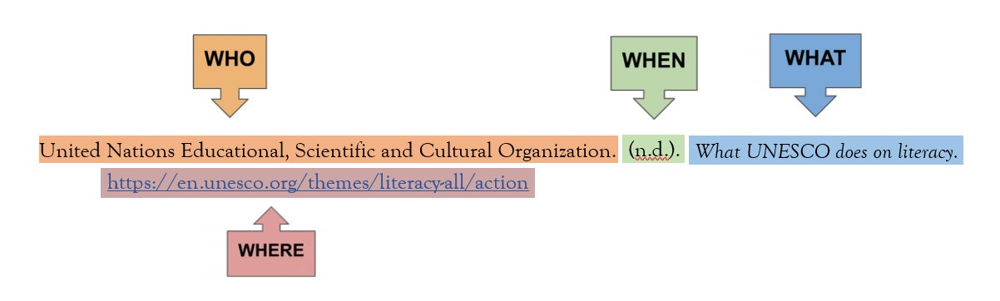

Welcome to the Archives, here, you will find every source/website used for help in creating this website.
You are welcome to use this information for your own research, but don't forget to credit the orginal author!
Side note: Most websites I used for information were made for big companies/organisations, therefore, it was difficult
finding authors. 😟
